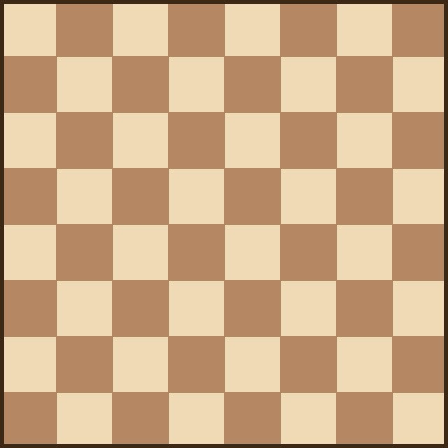
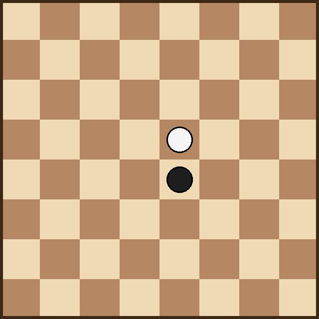

Welcome to World of Chess
What is Chess?
Chess is a two-player strategy game played on a checkered board of sixty-four squares. Each side begins with sixteen pieces: one king, one queen, two rooks, two bishops, two knights and eight pawns. The goal of the game is to checkmate the opponent's king, which means putting it under an inescapable threat of capture. Chess combines tactics, long-term planning and pattern recognition, which is why it is often called a "game of the mind".
Why People Love Chess
Millions of people around the world play chess for fun, for sport and for education. It is one of the few games that is completely fair: both players start with an identical position, so the result depends only on skill and preparation. Chess also has a rich history, a huge amount of recorded games and a very active online community, which makes it easy for a beginner to start learning today.
Reasons to play chess
- Improves concentration and memory
- Teaches planning and patience
- Free to play almost anywhere, even without a board
- Huge community of players of every age and level
How a game of chess begins
- White always moves first
- Players develop their knights and bishops
- Both sides usually castle to protect the king
- The middlegame begins once the pieces are developed
Gallery

